Accepted and closed (2026-10-31). One-subcell heavy melee opponent: AC 16, HP 27, +4 morningstar, 2d8+2 piercing. These level-one encounters are dangerous. The concept and completed slice are accepted.
Verification and limitations · Art provenance · Lone scenario · Goblin-supported scenario · Sleep scenario
Click a capture for its full 1920×1080 image. Replay reconstructs the current scene and HUD, not historical hover or floating/log feedback.
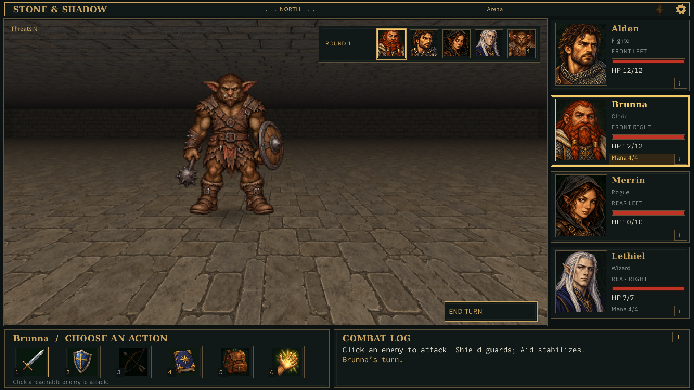
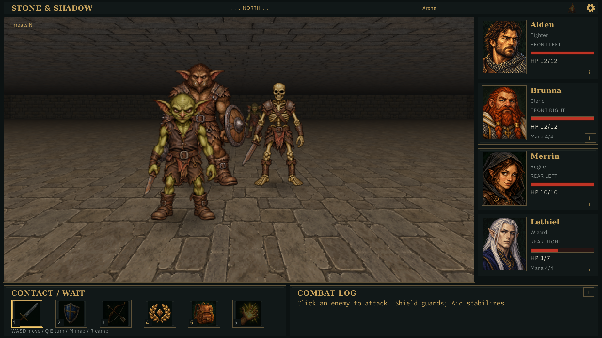
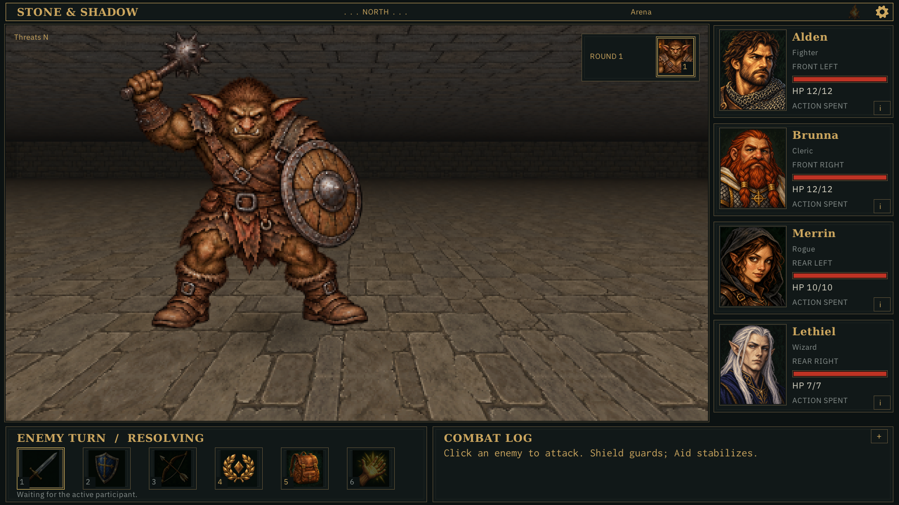
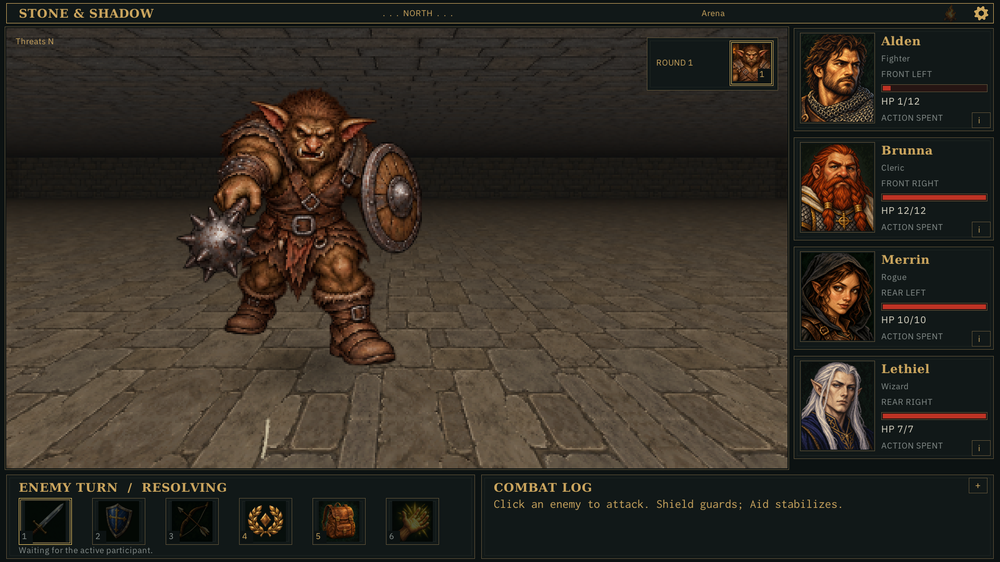
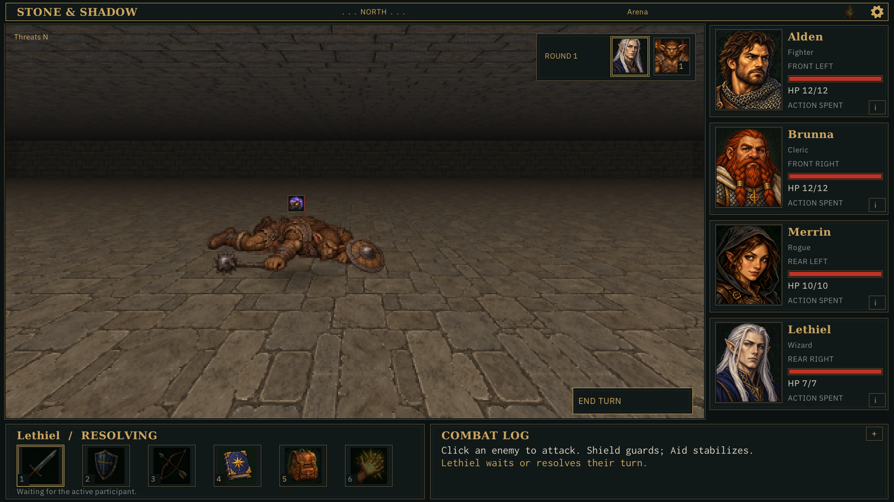
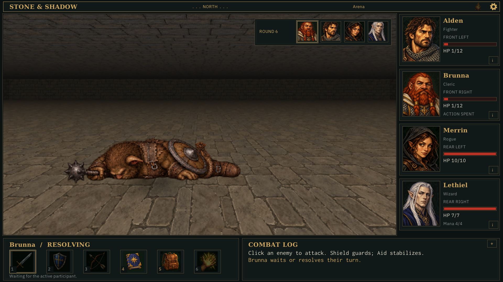
All four appearances together: cropped texture payload 173.6 MiB versus 316.1 MiB uncropped. No prepared-resolution reduction. Base texels are retained; mip sampling alignment changes slightly. Move the slider to compare the same scene.
The texture budget is 512 MiB; CPU alpha remains capped at 64 MiB. Streaming and atlas packing are deferred.
48 poses; timelines loop here for review. Collapse poses retain their low height.
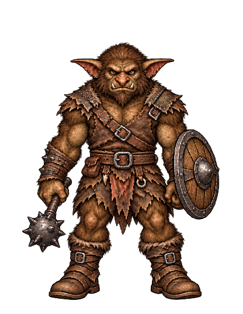
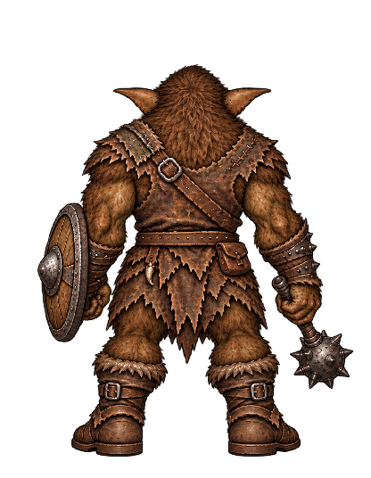
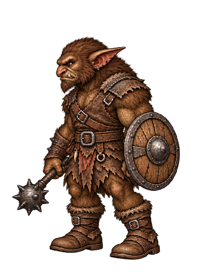
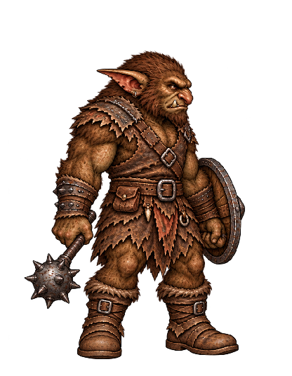
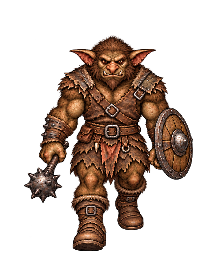
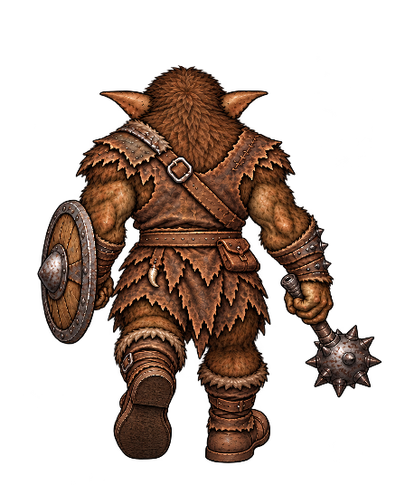
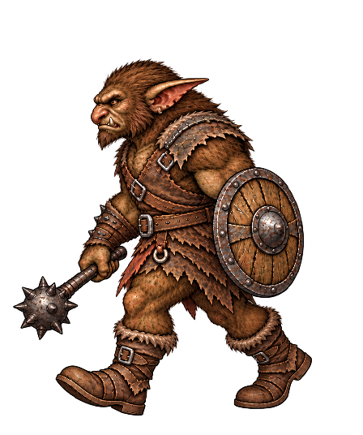
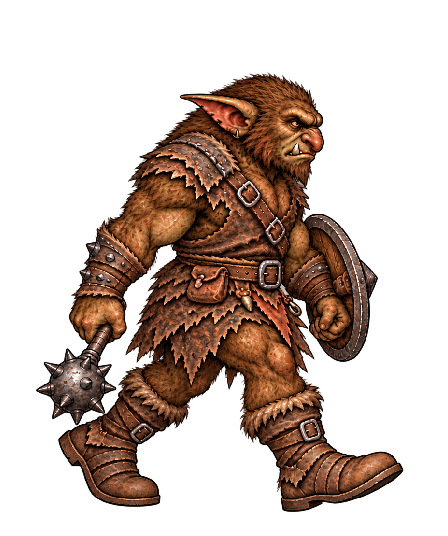
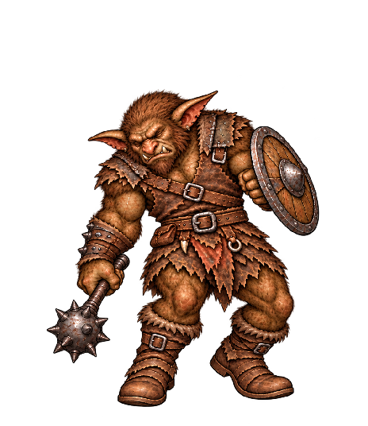
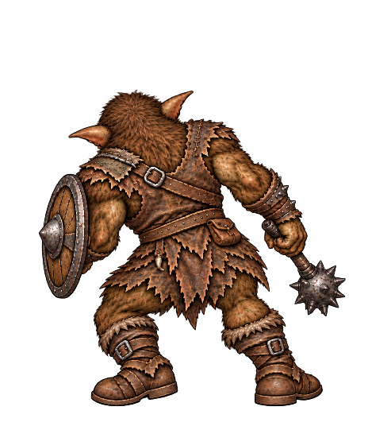
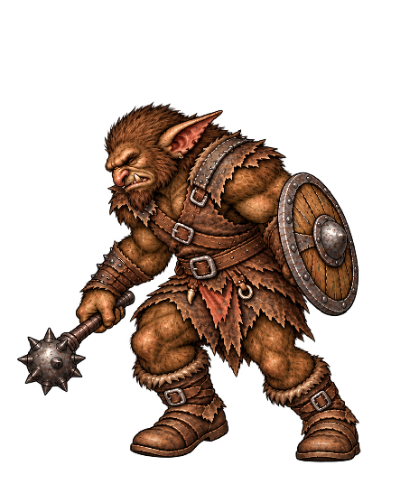
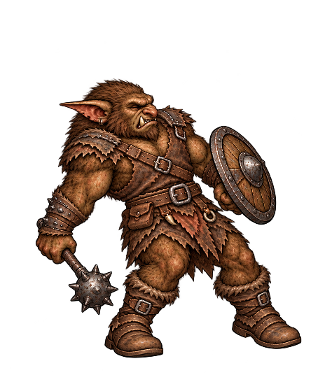
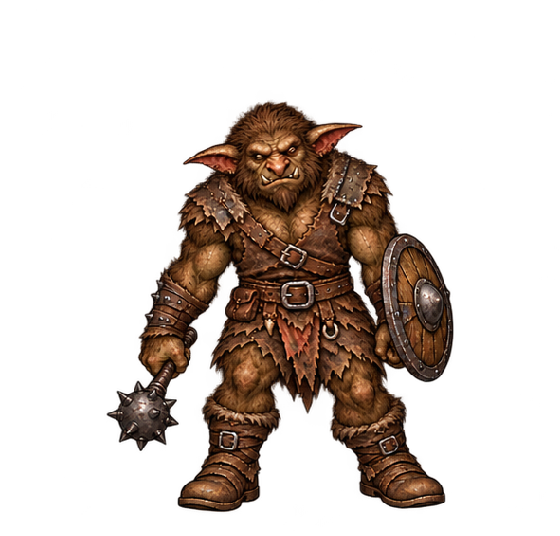
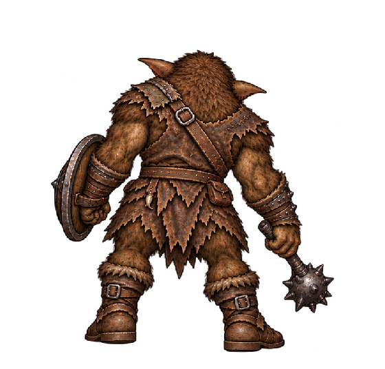
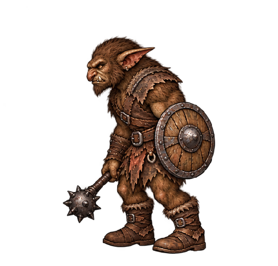
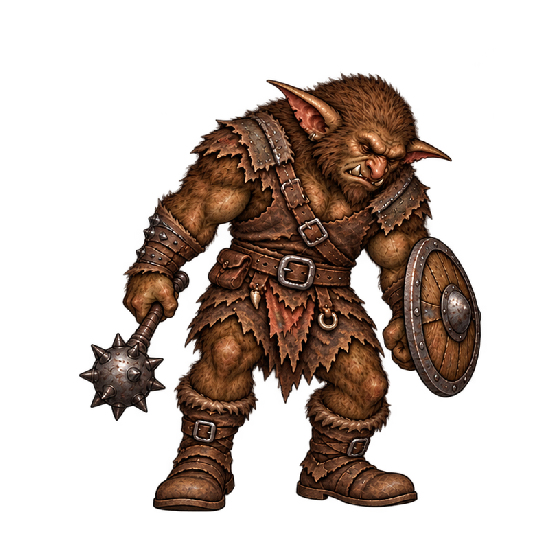
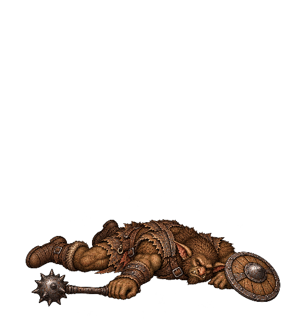
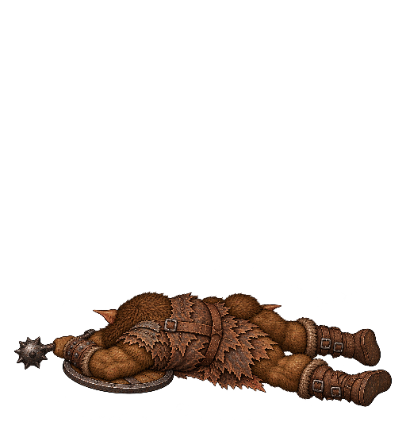
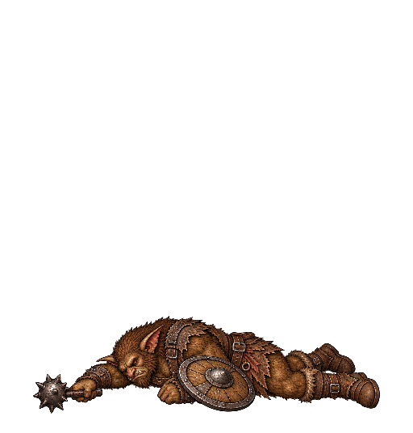
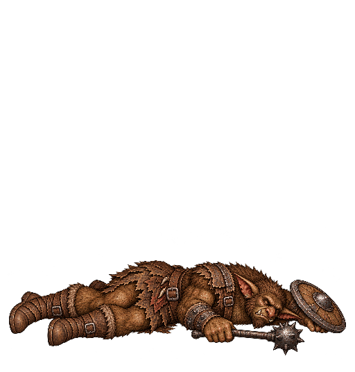
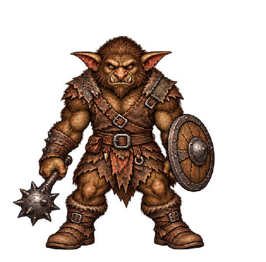